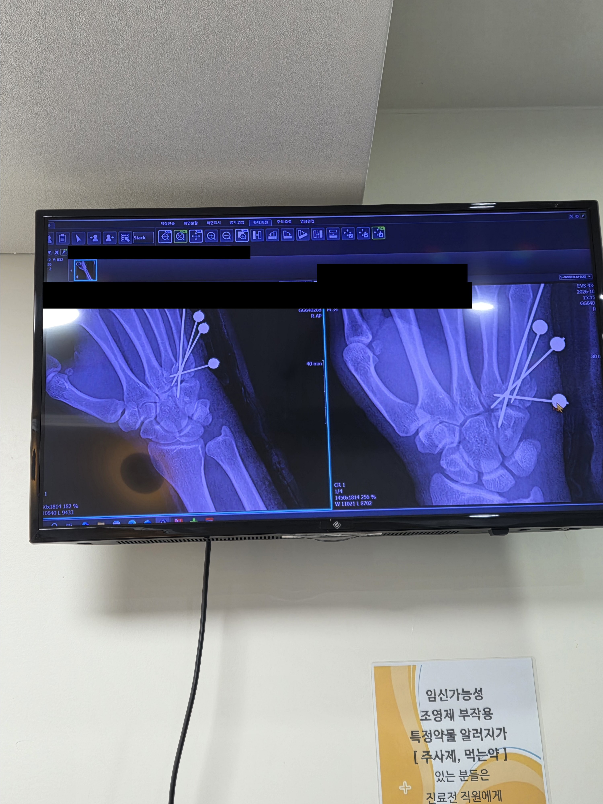

개인정보 가리고 올림...
붕대푼 사진은 혐오라서 안올렷슴당
오른쪽 손 못써서 우울증도 같은와버린건 덤..
인테리어나 전기작업 이런거 궁금한사람 아무거나 물어봐두댐

개인정보 가리고 올림...
붕대푼 사진은 혐오라서 안올렷슴당
오른쪽 손 못써서 우울증도 같은와버린건 덤..
인테리어나 전기작업 이런거 궁금한사람 아무거나 물어봐두댐
그냥 무난하게 동성꺼나 제품3사꺼 쓰셔도 무방합니다 필립스 오스람레드벤스 우리조명(장수)
싸구려사서 그런가.. ㅜㅜ 감사함둥
배선체크해바야대여 그거 반불들어온거 보고 그렇게 판단하신걸수도있어요 아 알려주곳싶은데 이건 사진이무조건필요해요
만약 120W 등이 전선 꼽는데가 3군데면 한쪽으로 같은선색상을 몰아주고 천장에 나와있는 2개선을 하나씩 꼽아주셔두 되구여
천장에 나와있는선이 3개면 공통선이 1개 스위치선이 2개일거에요 그거맞춰서 연결을 잘하셔야대여
인테리어해서 어제 입주했는데 스위치 하나가 끄고 키는 방향이 반대에요.
그리고 삼로 스위치 원래 되던거 하나가 필요조건으로 작동해요.
질문은 아니고 그냥 그렇다는 거에요. 슬퍼요.
스위치를 거꾸로 단거구여 삼로 스위치는 신호선을 어따가 팔아먹어서 이상한데 끼신거같은데 빨리 as받으십숑
나르면 답안나옵니다 잔금주지말구여
해수어항 산호 조명 너무 비싼데 대체 가능한
조명들좀 알려주세요
아니 방등이 120인데 왜어두으신거죠? 사진받아보고싶네여/...